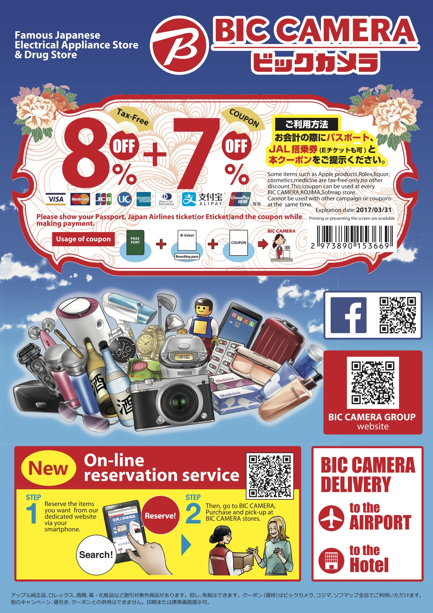

Bic camera - JAL
 優惠卷Bic camera - Visa
使用Visa卡消費享95折優惠。
*只限單日購買免稅商品累計日幣5,264元（不含稅）以上的客人。
*不適用於Apple商品、勞力士腕錶、藥妝店或是酒類商品。
*本優惠僅適用於符合免稅購物條件的客人，需要出示護照。
*有關免稅購物之細則請向店員諮詢。
Yodobashi - Visa
使用Visa卡消費享95折優惠。
* 只限單筆購買免稅商品累計日幣5400元（含稅）以上的客人。
* 本優惠僅適用於符合免稅購物條件的客人，需要出示護照。
* 有關免稅購物之細則請向店員諮詢。
大丸百貨、松坂屋百貨
活動期間：105/11/1-106/2/28
活動內容：出示遠東商銀信用卡可於日本指定觀光旅客服務台領取大丸/松板屋百貨優惠券，刷卡單筆消費滿額還可累積HAPPY GO點數(須登錄，活動詳情)
- 優惠一：9.5折購物優惠
-
消費滿3,000日圓（含稅）以上即可使用
- 不適用於食品、特價品、鐘錶賣場及國際精品館等賣場
- 無法與其他折價券同時使用
- 優惠二：2,000日圓美食券
-
辦理50,000日圓（含稅）以上的免稅手續，出示優惠券即可領取
- 適用於食品賣場、餐廳、咖啡廳
- 無法與其他折價券同時使用
-
- 觀光旅客服務台
關東羽田、成田機場/關西機場/中部機場/北海道札幌電視塔
優惠券不可於百貨店內兌換，請見諒